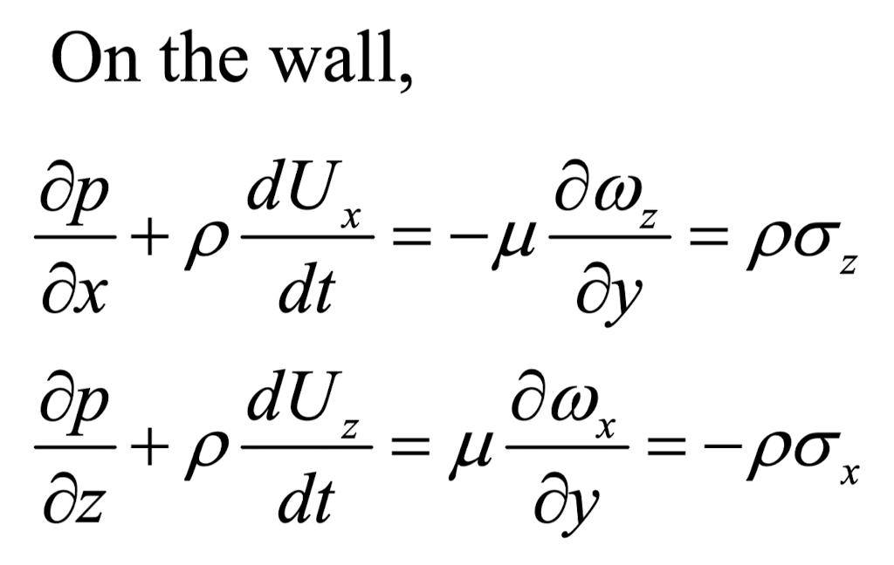

Ch3 Vorticity dynamics_part5_ source of vorticity
지금부터는,
vorticity가 어떻게 형성되는 지 에 대해서
탐구해보자.
벽면에서의 모든 velocity = 0

0 notation - values on the wall.
그리고, 아래의 그림같은 상황에서,
x0과 평행한 속도 성분 - u,w
z0과 평행한 속도 성분 - u,w
의 변화는 없다고 가정하자.


incompressible flow의 가정이후 연속방정식
vorticty의 정의를 적용하면,

이제 여기서,
위 그림에 나오는
벽면의 바로 위에 있는 stream line하나를 분석해보자.(빨간색)
stream line의 정의에 따라서,
u/dx = v/dy = w/dz
가 성립하며,
x 와 z는 수직하기 때문에,
(dz/dx)_streamline = zero

여기에 taylor series를 더해주어
streamline에서의 속도를 벽면에서의 속도로 유도해보자.
결론적으로 dw/dy_0 = 0
이 도출된다.
그리고, du/dy_0 만이 이 상황에서
유일하게 non-zero term 이라는 사실.
위에서 구한 velocity gradient를
viscous force식에 대입해주면,
n = (0,1,0)

x방향 viscous force 만 남게 된다.
이를 vorticity로 표현해보면.

즉, 여기서 하고 싶은 말은,
'A solid wall is the source of the vortiticty that enters the flow field'
no-slip condition으로 인하여, 벽과 수직으로
velocity gradient -> viscous force - vorticity
가 벽으로부터 형성 된다는 것이다.
HOWEVER BUT
하지만, 벽면 바로 위에서의 vorticty가 생긴다는 것은 알겠고,
벽 바로 위부터 위의 유체로 Vorticity가 어떻게 흘러가는지는
Vorticity Flux
를 통해 살펴보아야 한다.
따라서, 벽면과 수직벡터와 gradientw의 내적으로
flow로 vorticity가 얼마나 흘러들어가는지 (flux)
를 나타내는 Vorticity Flux를 다음과 같이 정의한다.

위의 예시 그대로, n = (0,1,0)일 때,

이제, 벽면에서 vorticity flux를 계산하기 위해서
Navier's Stokes 방정식을 세워보자.

먼저, incompressible flow의 경우
연속방정식을 통해서, Laplace(u)를 다음과 같이 바꿀수 있고,

+ 벽면에서 no-slip condition으로 u = (0,0,0)
+중력을 무시해주면

여기서
x,z component
를 전개하면 다음과 같이 유도된다.
중요한 것은 y방향으로의 gradient만 존재하고
x,z 방향으로의 gradient 는 존재하지 않는다는 것이다.
(vorticity flux가 존재하지 않기 때문에)

위 두 식이 의미하는 것은,
x,z방향 즉, 벽면의 방향 (along the wall) 의 압력 구배는
벽 위로의(y방향) 유체의 vorticity flux와 비례한다는 것.
y방향 vorticity flux 또한 연속방정식의 성질을 이용하면, 다음과 같이 유도 된다.

실제 예시를 통해서 확인해보자

A의 상황에서, y방향으로 vorticity 는 감소한다(양수이므로)
B의 상황에서는 vorticity는 증가한다(음수이므로)
따라서, vorticity의 magnitude는 둘다 감소하지만,
부호에따라서 flux의 부호도 다르게 된다
다음 예시를 살펴보자.
Boundary layer가 형성되어 있는 벽면의 경우,
벽면을 따라, pressure gradient가 존재하지 않는다.
따라서, Vorticity flux_z,x = 0
하지만, 신기하게 boundary layer 내부
z방향 vorticity는 존재한다.
그렇다면, 이 vorticity는 어디서부터 생성 된 것일 까?

정답은 빨간색으로 표시된 Front tip에서 형성되었다.
급격한 속도변화가 일어나는 tip에서는 pressure gradient가 존재하며,
이 전방에서 vorticity가 생성되었고,
이후 뒤로 전파된 것이다.
벽면이 움직이는 경우.
reference 가 움직이는 경우,
non-intertial frame의 식을 사용하여 분석하였다.

벽면이 회전없이 그저 오른쪽으로 U(t)로 움직이는 경우
다음과 같이 식 정리가 가능하다.

똑같이, 벽면 위의 경우 u = (0,0,0)
x,z,성분의 식을 정리하면

위식을 적용시킬 예시로
Airfoil 의 starting vortex를 살펴보자.

일단, upper, lower surface에서 wz는 생성되지 않음을
밑의 식을 통해서 증명할 수 있다.

그렇다면, starting vortex는 어디서 generate 된 것일까?
바로 아까 유도했던 식 좌항의 2nd term
즉 acceleration term이다.
비행기가 가속함과 동시에 z방향 vorticity flux가 생성되고,
이로 인하여 starting vortex가 생성된 것이다.